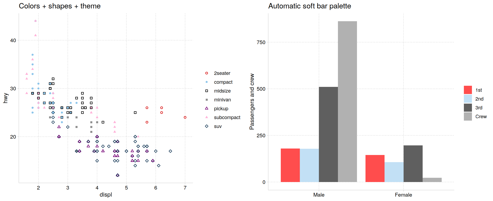

Full documentation and more examples: tdmize.github.io/cleanplots
Publication-ready defaults for ggplot2: the cleanplots graphing scheme. cleanplots provides professional-looking figures with strong data visualization and accessibility defaults – colors are chosen to be colorblind-friendly and to remain distinguishable when printed in black & white, with matching marker shapes and line patterns so that groups stay distinct across multiple visual channels. A companion scheme is available for Stata, so figures made in R and Stata share the same design.
Usage
The quickest way to use cleanplots is one setup call: it sets the theme, makes markers and lines larger and more visible, and applies the cleanplots colors to all plots by default (main palette for color, softer bar palette for fill):
library(ggplot2)
library(cleanplots)
cleanplots_defaults()
ggplot(mpg, aes(displ, hwy, color = class, shape = class)) +
geom_point() +
scale_shape_cleanplots()
cleanplots_save("my-figure.png") # saves at a fixed 7 x 5 in, 300 dpiOr apply the pieces individually per plot. (If you are not using the full cleanplots setup, we recommend adding theme_minimal() or theme_cleanplots() – the colors and markers are much easier to see against a white background.)
library(ggplot2)
library(cleanplots)
# Scatterplot with the main palette and theme
ggplot(iris, aes(x = Sepal.Length, y = Sepal.Width, color = Species)) +
geom_point(size = 2) +
theme_cleanplots() +
scale_color_cleanplots()
# Bar charts use the softer bar/area palette
titanic <- aggregate(Freq ~ Class + Sex, data = as.data.frame(Titanic), sum)
ggplot(titanic, aes(Sex, Freq, fill = Class)) +
geom_col(position = "dodge") +
theme_cleanplots() +
scale_fill_cleanplots(palette = "bars")
# Reorder or reverse the colors
scale_color_cleanplots(order = c(7, 1, 2))
scale_color_cleanplots(reverse = TRUE)
# Extract hex codes directly
cleanplots_colors()
cleanplots_colors("red", "navy")
cleanplots_colors(bars = TRUE)
The palettes
Main colors (palette = "default") – used for markers, lines, and confidence intervals:
| # | Name | Hex | Definition |
|---|---|---|---|
| 1 | red | #D50000 |
red*1.2 |
| 2 | ltblue | #8FC6EB |
eltblue*.9 |
| 3 | black | #000000 |
black |
| 4 | gray | #909090 |
gs9 |
| 5 | purple | #740074 |
purple*1.1 |
| 6 | pink | #FFB3D9 |
pink*.3 |
| 7 | navy | #143755 |
navy*1.3 |
| 8 | ltgray | #C0C0C0 |
gs12 |
| 9 | dkgray | #404040 |
gs4 |
| 10 | lavender | #D9D7F0 |
lavender*.35 |
Bar/area colors (palette = "bars") – softer versions used for bar charts, area plots, and pie charts, which use far more ink than points and lines:
| # | Name | Hex | Definition |
|---|---|---|---|
| 1 | red | #FF4D4D |
red @ 70% |
| 2 | ltblue | #C2E0F5 |
eltblue*.7 @ 70% |
| 3 | black | #5F5F5F |
black*.9 @ 70% |
| 4 | gray | #B1B1B1 |
gs9 @ 70% |
| 5 | purple | #AF5FAF |
purple*.9 @ 70% |
| 6 | pink | #FFDBEE |
pink*.2 @ 70% |
| 7 | navy | #5D7A93 |
navy*1.1 @ 70% |
| 8 | ltgray | #D3D3D3 |
gs12 @ 70% |
| 9 | dkgray | #909090 |
gs6 @ 70% |
| 10 | lavender | #E8E7F6 |
lavender*.3 @ 70% |
Shapes and line patterns
Color alone reliably distinguishes about 4-5 groups. Beyond that – and for black & white printing and colorblind readers – cleanplots varies several visual channels at once: scale_shape_cleanplots() assigns hollow marker shapes to the dark colors and solid shapes to the light colors, and scale_linetype_cleanplots() assigns line patterns in pairs, ordered from closest to solid to furthest (solid, solid, longdash, longdash, twodash, twodash, dashed, dashed, dotdash, dotdash), so that any two groups sharing a shape or pattern always differ strongly in lightness. Groups remain distinguishable by color, by lightness, by marker shape and fill, and by line pattern.
ggplot(mpg, aes(displ, hwy, color = class, shape = class)) +
geom_point(size = 2) +
theme_cleanplots() +
scale_color_cleanplots() +
scale_shape_cleanplots()Design goals
The palette alternates dark and light colors so the first several groups are distinguishable by lightness alone when printed in black & white, contains no red-green pair, and passes deuteranopia, protanopia, and tritanopia simulation checks for the first five colors (minimum Delta-E of about 21). Check the palette yourself at Coloring for Colorblindness.
The theme
theme_cleanplots(): white background, no plot border, light gray axis lines and ticks, dotted light gray gridlines, a frameless, untitled legend at the right, and black-outlined facet strips with bold labels. To restore a legend title:
theme_cleanplots() + theme(legend.title = element_text())cleanplots for Stata
The original Stata scheme is available at https://www.trentonmize.com/software/cleanplots or via net install cleanplots, from("https://tdmize.github.io/data/cleanplots") replace. Colors, marker symbols, line patterns, and layout match this package, so figures made in R and Stata look like siblings.